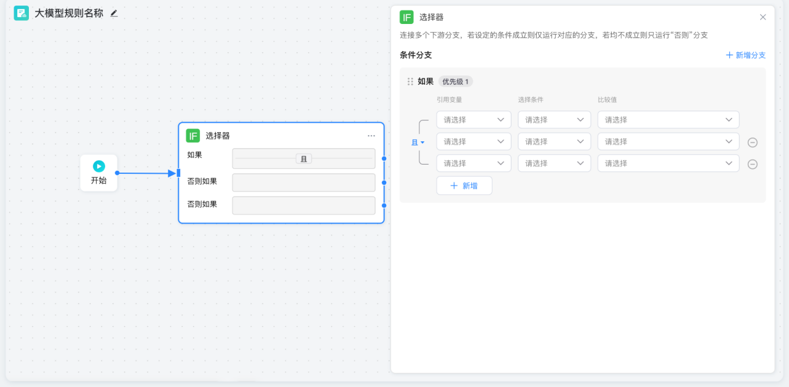
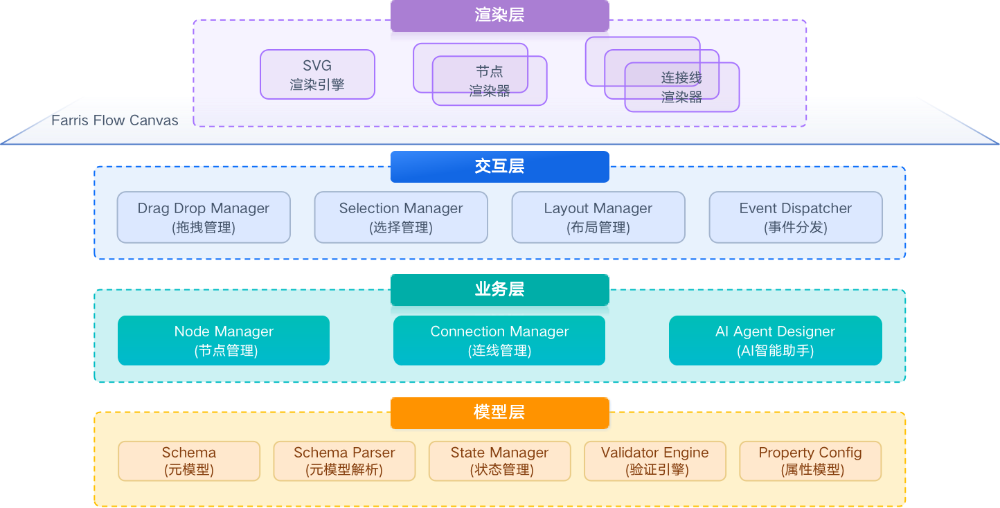

CASE 03 · FARRIS FLOWCANVAS · OPEN SOURCE
Composing agent workflows
without fighting the canvas.
A visual editor where people build AI-agent workflows from reusable nodes, branch them with conditions, and configure each step in a panel that follows their selection.
- Role
- Frontend Software Engineer Intern
- Team
- Inspur · OpenAtom farris-vue
- Timeline
- Jun – Aug 2025
- Open source
- Top 10 contributor · gitee.com/ubml/farris-vue ↗
- PROBLEM
- Each node type connected differently, and large graphs lagged.
- DECISION
- One typed port model for every node; settings that follow the selection.
- TRADE-OFF
- Less per-node visual freedom, for connections that behave the same everywhere.
- RESULT
- 10+ node types on one model; ~2× faster on 50+ nodes.

1PROBLEM
Every new node made the editor harder to use — and slower.
Each node type had its own ports, connection rules, and settings, built one by one. Adding a node duplicated interface logic, behaviour drifted between node types, and dragging in a large graph redrew the whole canvas.
How might we make branching workflows feel predictable to build, at 5 nodes or 50?
2UX JUDGMENT
What people building workflows need from the canvas.
Every node connects the same way.
Inputs on one side, outputs on the other, conditions as extra outputs — no per-node surprises.
Settings follow selection.
Select a node, its properties appear beside the canvas — no modal that hides the graph.
Dragging must never lag.
On a 50-node graph, moving one node should feel as light as on a 5-node graph.
3EXPLORATION
Three ways to model a port — the decision behind “predictable”.
How ports are modelled decides how connections behave on screen. We compared three models against one test: can a single rule handle both a simple node and a three-way condition?
We kept B. On screen, that means every node connects the same way, and a new node type is a schema plus a component — not another special case people have to learn.
4TRADE-OFFS
Predictability over flexibility.
WE GAVE UP
Per-node visual freedom: every node follows one port model.
TO GET
Connections behave the same everywhere, and a new node type needs no new rules to learn.
WE GAVE UP
Canvas width: the property panel stays docked beside the graph.
TO GET
Settings that never hide the workflow, unlike a modal.
5PROTOTYPE & TEST
Interactions were tested in a working canvas, not in static frames.
I translated the team’s Figma flows into components and tested drag, selection, and branching directly in the browser. Try the reconstruction: drag nodes and select one to see its properties follow.


6RESULT
Bigger workflows, same lightness.
7REFLECTION
What I would test next.
Next, I would test the port model with first-time workflow builders and measure whether predictable connections actually reduce configuration errors — not only rendering complexity.